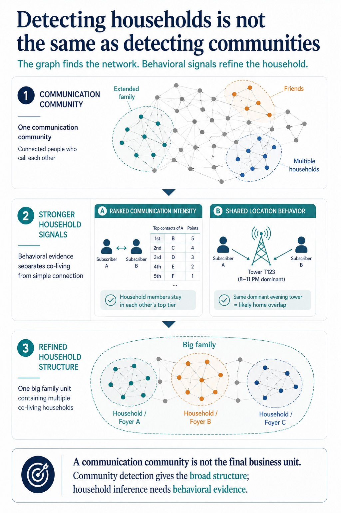

Overview
This project started from precomputed telecom communication communities derived from call graph analysis. At first glance, those communities looked like the answer: groups of people who call each other frequently.
But for the business problem, that output was still too coarse. A communication community can contain extended family, multiple households, close friends, and other tightly connected subgroups.
The real goal was to identify likely household-level ties inside those broader communities. So instead of treating the graph output as the final answer, the pipeline refined it into nested social structure: Big Family and Foyer / Household.
Architecture

📋 View detailed text-based architecture diagram
┌─────────────────────────────────────────────┐
│ Telecom Communication Communities │
│ precomputed CLA community assignments │
└──────────────────────┬──────────────────────┘
│
▼
┌─────────────────────────────────────────────┐
│ Community Filtering │
│ keep communities with enough TT members │
└──────────────────────┬──────────────────────┘
│
▼
┌─────────────────────────────────────────────┐
│ Ranked Contact Layer │
│ top incoming / outgoing contacts per user │
│ ranked by calls, days, and duration │
└──────────────────────┬──────────────────────┘
│
▼
┌─────────────────────────────────────────────┐
│ Shared Cell Behavior Layer │
│ top-used cell towers per subscriber │
│ retain overlapping dominant towers │
└──────────────────────┬──────────────────────┘
│
▼
┌─────────────────────────────────────────────┐
│ Candidate Family Tie Construction │
│ communication closeness + shared location │
└──────────────────────┬──────────────────────┘
│
▼
┌─────────────────────────────────────────────┐
│ Big Family Construction │
│ broader connected family-like groups │
└──────────────────────┬──────────────────────┘
│
▼
┌─────────────────────────────────────────────┐
│ Foyer / Household Partitioning │
│ graph-based grouping in R / igraph │
└──────────────────────┬──────────────────────┘
│
▼
┌─────────────────────────────────────────────┐
│ Final Household-Level Output │
│ msisdn, community, big_family, foyer, role │
└─────────────────────────────────────────────┘
The Core Idea
The first graph segmentation was not the final business unit.
A communication community can mix extended family, multiple households, friends, work relationships, and other strong subgroups. So the project had to separate two different levels of structure:
- Big Family: the broader connected social unit
- Foyer / Household: the smaller likely co-living unit inside it
Graph membership alone was not enough. To infer a household-level tie, the relationship also had to look like daily life: frequent direct communication and persistent shared place usage.
Behavioral Signal Design
Ranked Communication Intensity
The pipeline did not rely only on total call volume. It built top-5 incoming and outgoing contact lists for each subscriber, preserving ordinal importance.
Shared Cell-Tower Usage
The pipeline used dominant cell-tower patterns as a proxy for recurring location overlap, turning infrastructure traces into household evidence.
Signal Intersection
A tie had to satisfy both communication closeness and shared location behavior to be considered a strong household candidate.
Graph Partitioning
Once stronger ties were constructed, each broader family structure was partitioned into smaller foyer groups using graph-based grouping in R.
Selected Code Snippets
1. Keep communities with enough telecom members
select a.*, b.nb_comm_tt
from family_candidates a
left join (
select community, count(msisdn) as nb_comm_tt
from family_candidates
group by community
) b
on a.community = b.community
where b.nb_comm_tt >= 2;
2. Aggregate direct subscriber-to-subscriber communication
select from_subscriber_id as a_number,
to_subscriber_id as b_number,
sum(calls) as calls,
sum(duration) / 60 as duration_minutes,
sum(calling_days) as calling_days
from cdr_monthly_traffic
where a_number_tt_cust_flag = 1
and b_number_tt_cust_flag = 1
group by from_subscriber_id, to_subscriber_id;
3. Keep top-used cell towers per subscriber inside community
select *
from (
select d.*,
row_number() over (
partition by community, msisdn
order by nbre desc
) as rang
from community_cells d
)
where rang <= 5;
4. Keep ties that are both close contacts and shared-location neighbors
case
when num_1 in (first_to, second_to, first_from, second_from)
then num_1
end as num_close_1
5. Build graph input for household partitioning in R
select distinct
msisdn as a_num,
substr(foyer, 1, 8) as b_num,
big_family as groupe
from family_household_edges
where foyer is not null
order by big_family;
Cell-Tower Dominance as Behavioral Proxy
One of the most useful signals in the project was not demographic at all.
Dominant cell-tower usage acted as a behavioral proxy for likely home-location overlap. Instead of asking where people declared they lived, the pipeline inferred shared daily-life proximity from repeated infrastructure traces.
This is a useful applied ML pattern: sometimes the strongest features are not direct measurements of the concept you want. They are operational traces that behave like reliable proxies.
Why this matters
- distinguishes graph communities from household structure
- combines graph output with behavioral evidence
- avoids treating all connected members as equally close
- turns telecom infrastructure traces into social inference signals
- shows that clustering often needs a second refinement layer
Where this pattern generalizes
The same design principle appears in many applied analytics settings:
- customer segments vs actual buying groups
- graph communities vs decision units
- care networks vs households
- geographic clusters vs operating zones
- operational traces vs behavioral proxies
The reusable pattern is simple: the first segmentation is often not the final unit you care about.
Key Takeaway
Detecting households is not the same as detecting communities.
In applied graph analytics, the first clustering step is often only the beginning. The real analytical work starts when you refine a connected structure into the smaller behavioral unit the business actually needs.
Public Repository Scope
This public version shares the project architecture, selected query logic, behavioral inference design, and project presentation. Raw telecom data, private schemas, and production identifiers are not included.